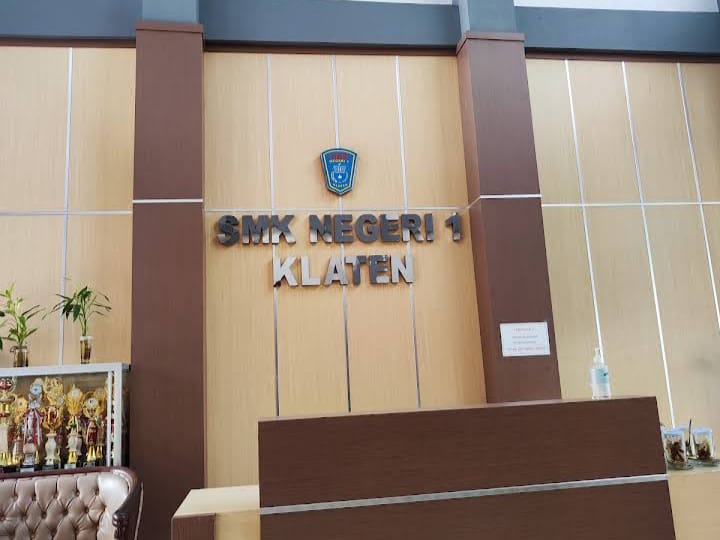
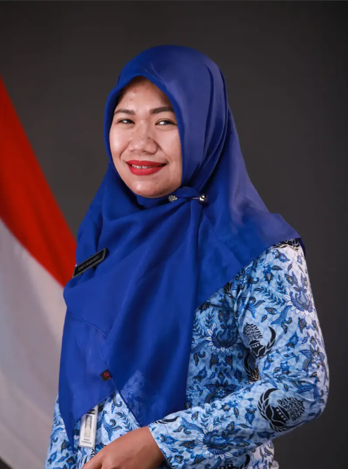
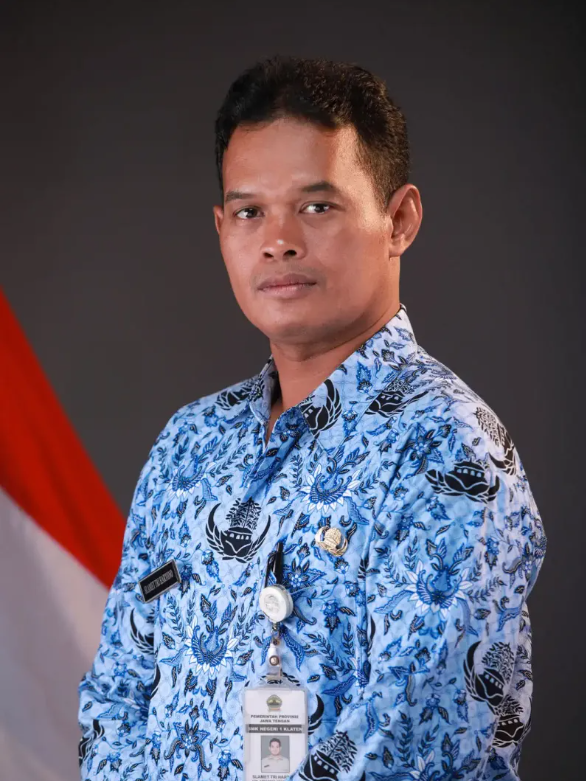
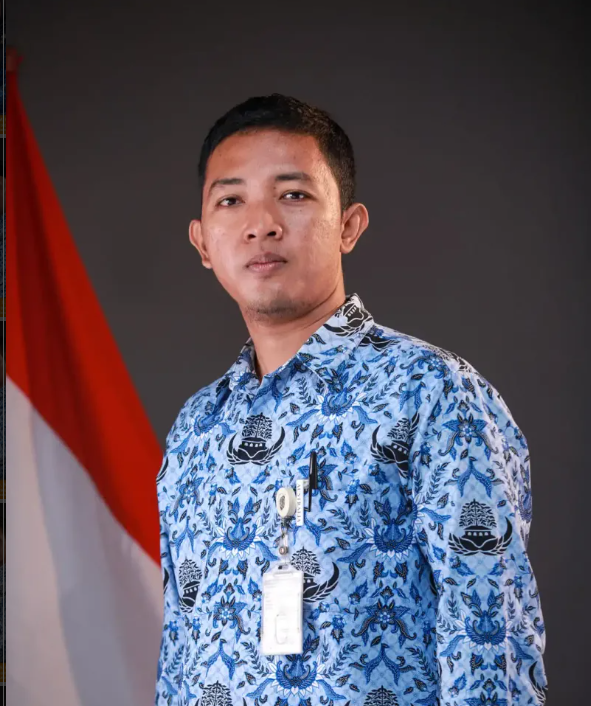
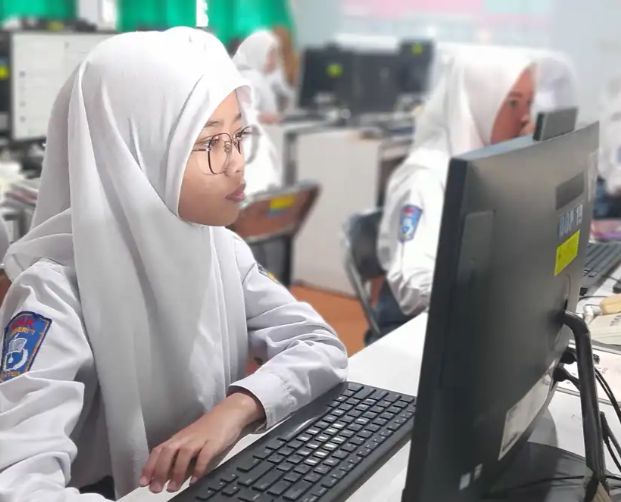
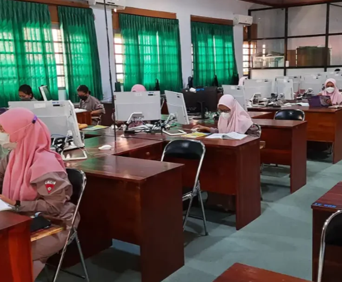
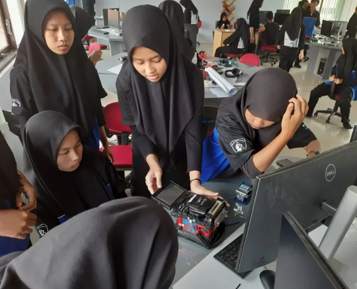
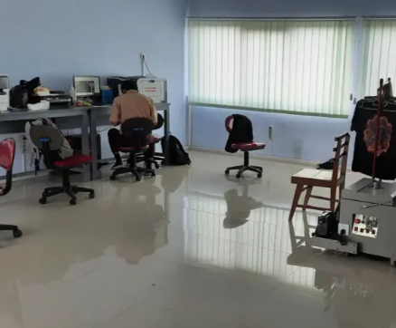
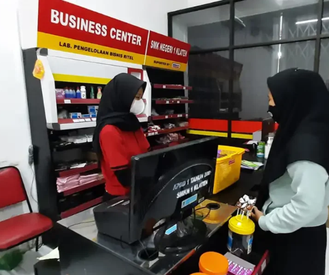

<!DOCTYPE html>
<html lang="id">
<head>
    <meta charset="UTF-8">
    <meta name="viewport" content="width=device-width, initial-scale=1.0">
    <title>SMK Negeri 1 Klaten</title>
    <link rel="stylesheet" href="style.css">
    <!-- Panggil file script JS di sini -->
    <script src="script.js"></script>
</body>
</html>
</head>
</body>
<body>

    <!-- NAVBAR -->
    <nav class="navbar">
        <div class="logo-container">
            
            <div class="brand-text">
                <div class="brand-title">SMK NEGERI 1 KLATEN</div>
                <div class="brand-tagline">Unggul, Berkarya, Berkarakter & Berdaya Saing</div>
            </div>
        </div>

        <ul class="nav-menu">
            <li><a href="index.html">Beranda</a></li>
            <li><a href="profil.html">Profil</a></li> <!-- Memanggil id="profil" -->
            <li><a href="informasi.html">Informasi kegiatan</a></li>
            <li><a href="galery.html">Galery</a></li>
            <li><a href="kontak.html">Kontak</a></li>
            <li>
                <div class="search-box">
                    <input type="text" placeholder="Cari...">
                    <span class="search-icon">&#128065;</span>
                </div>
            </li>
        </ul>
    </nav>

    <section class="profile-section" id="profil">
  <div class="profile-container">
    <h2>Profil Sekolah</h2>
    <div class="divider"></div>

    <!-- Tombol Tab / Pill Buttons -->
    <div class="tab-buttons">
      <button class="tab-btn active" onclick="switchTab('sejarah', this)">Sejarah</button>
      <button class="tab-btn" onclick="switchTab('visimisi', this)">Visi Misi</button>
    </div>

    <!-- Layout Utama (Gambar Kiri, Konten Kanan) -->
    <div class="profile-content-wrapper">
      
      <!-- Gambar Gedung -->
      <div class="profile-image-box">
        
      </div>

      <!-- Area Teks Konten (Kanan) -->
      <div class="profile-text-box">
        
        <!-- Konten 1: Sejarah (Default Tampil) -->
        <div id="sejarah" class="tab-content active">
          <h3 class="content-title">Sejarah SMK Negeri 1 Klaten</h3>
          <p>
            Perjalanan SMK Negeri 1 Klaten dimulai dari pembentukan SMEA Perintis sebelum Agustus 1961 yang bertempat di rumah Bapak Hadi Sanyoto dan menumpang di Gedung Sositet. Sekolah ini resmi berubah menjadi SMEA Negeri 1 Klaten pada 1 Agustus 1961 serta sempat berpindah lokasi ke Gedung SKP hingga Gedung SMEP. Seiring perjalanan waktu, sekolah sempat dinamai SMEA Pembina Klaten pada 1978 sebelum kembali ke nama semula pada 1985, hingga akhirnya resmi bertransformasi menjadi SMK Negeri 1 Klaten pada tahun 1995 setelah penggabungan kompleks gedung dengan SMEA Negeri 2 Klaten pada 1993.
          </p>
          <p>
            Memasuki era modern, sekolah ini berkembang pesat dengan membuka jurusan berbasis teknologi seperti TKJ pada 2005, serta Multimedia dan TPPPP pada 2008. SMK Negeri 1 Klaten juga meraih sertifikasi internasional ISO 9001:2000 pada periode 2006–2007 dan terpilih sebagai sekolah RSBI-INVEST pada 2008. Komitmen terhadap mutu terus berlanjut hingga era 2014–2018 melalui pembaruan sertifikasi ISO 9001:2015 dan terpilihnya sekolah ini sebagai salah satu SMK Revitalisasi se-Indonesia berdasarkan Inpres Nomor 9 Tahun 2016.
          </p>
        </div>

        <!-- Konten 2: Visi Misi (Tersembunyi Awalnya) -->
        <div id="visimisi" class="tab-content">
          <h3 class="content-title">Visi & Misi SMK Negeri 1 Klaten</h3>
          <p><strong>Visi:</strong></p>
          <p>
            "Menjadikan Tamatan yang Berkarakter dan Berdaya Saing" (BERKARYA)
          </p>
          <br>
          <p><strong>Misi:</strong></p>
          <ul class="misi-list">
            <li>Mewujudkan tamatan yang beriman bertaqwa kepada Tuhan Yang Maha Esa dan berakhlak mulia.</li>
            <li>Mewujudkan tamatan yang berkebinekaan global dan berjiwa gotong royong.</li>
            <li>Mewujudkan tamatan yang kreatif, bernalar kritis, dan mempunyai kemandirian.</li>
            <li>Mewujudkan tamatan yang menguasai teknologi informasi dan komunikasi.</li>
            <li>Mewujudkan tamatan yang bersertifikasi kompetensi nasional maupun internasional.</li>
            <li>Mewujudkan sekolah yang mandiri dan berprestasi di tingkat nasional maupun internasional.</li>
            <li>Menyelenggarakan pendidikan yang selaras dengan dunia kerja.</li>
          </ul>
        </div>

      </div>

    </div>
  </div>
</section>

<!-- Panggil script.js CUKUP SAKALI di paling bawah sebelum penutup </body> -->
<script src="script.js"></script>

<!-- SECTION KEPEMIMPINAN SEKOLAH -->
<div class="leadership-section">
  <h3 class="leadership-title">Kepemimpinan Sekolah</h3>

  <div class="tree-container">
    <!-- Puncak: Kepala Sekolah -->
    <div class="tree-top">
      <div class="leader-card">
        <div class="avatar-box">
          
        </div>
        <div class="leader-name">Dra. Is Hardewi, M.pd</div>
        <div class="leader-badge">Kepala Sekolah</div>
      </div>
    </div>

    <!-- Garis Penghubung Struktur -->
    <div class="tree-lines">
      <div class="vertical-line-top"></div>
      <div class="horizontal-line"></div>
      <div class="vertical-lines-bottom">
        <span></span>
        <span></span>
        <span></span>
        <span></span>
      </div>
    </div>

    <!-- Barisan Bawah: Wakil / Jabatan Lain -->
    <div class="tree-bottom">
      
      <div class="leader-card">
        <div class="avatar-box">
          
        </div>
        <div class="leader-name">Dwi Rahayu, S.Pd</div>
        <div class="leader-badge">Wakasek Kurikulum</div>
      </div>

      <div class="leader-card">
        <div class="avatar-box">
          
        </div>
        <div class="leader-name">Tri Aji Budi Harto, S.Pd</div>
        <div class="leader-badge">Wakasek Kesiswaan</div>
      </div>

      <div class="leader-card">
        <div class="avatar-box">
          
        </div>
        <div class="leader-name">Slamet Tri Hartono, S.Kom, M.pd</div>
        <div class="leader-badge">Wakasek Sarpras</div>
      </div>

      <div class="leader-card">
        <div class="avatar-box">
          
        </div>
        <div class="leader-name">Taufik Hidayat, S.ST</div>
        <div class="leader-badge">Wakasek Humas</div>
      </div>

    </div>
  </div>
</div>


<!-- SECTION JURUSAN UNGGULAN -->
<section class="jurusan-section">
  <div class="jurusan-container">
    <h2 class="jurusan-main-title">6 Jurusan Unggulan</h2>

    <div class="jurusan-grid">
      
      <!-- Kartu 1: MPLB -->
      <div class="jurusan-card">
        <div class="jurusan-img-box">
          
        </div>
        <h3 class="jurusan-code">MPLB</h3>
        <p class="jurusan-name">(Manajemen Perkantoran dan Layanan Bisnis)</p>
        <p class="jurusan-desc">
          Mengelola administrasi kantor, mengatur dokumen, dan memberikan layanan bisnis.
        </p>
      </div>

      <!-- Kartu 2: AKL -->
      <div class="jurusan-card">
        <div class="jurusan-img-box">
          
        </div>
        <h3 class="jurusan-code">AKL</h3>
        <p class="jurusan-name">(Akuntansi Keuangan Lembaga)</p>
        <p class="jurusan-desc">
          Mencatat transaksi keuangan, menyusun laporan keuangan, dan mengelola administrasi keuangan
        </p>
      </div>

      <!-- Kartu 3: TJKT -->
      <div class="jurusan-card">
        <div class="jurusan-img-box">
          
        </div>
        <h3 class="jurusan-code">TJKT</h3>
        <p class="jurusan-name">(Teknik Jaringan Komputer dan Telekomunikasi)</p>
        <p class="jurusan-desc">
          Mempelajari instalasi, konfigurasi, dan pemeliharaan jaringan komputer serta sistem telekomunikasi.
      </div>

      <!-- Kartu 4: PPLG -->
      <div class="jurusan-card">
        <div class="jurusan-img-box">
          
        </div>
        <h3 class="jurusan-code">BC</h3>
        <p class="jurusan-name">(Broadcasting dan Perfilman)</p>
        <p class="jurusan-desc">
          Mempelajari proses pembuatan, pengemasan, dan penyiaran konten audio-visual melalui media massa.
        </p>
      </div>

      <!-- Kartu 5: DKV -->
      <div class="jurusan-card">
        <div class="jurusan-img-box">
          
        </div>
        <h3 class="jurusan-code">DKV</h3>
        <p class="jurusan-name">(Desain Komunikasi Visual)</p>
        <p class="jurusan-desc">
          Pembuatan strategi visual, identitas merek (branding), desain grafis (cetak & digital), ilustrasi, fotografi, hingga animasi.
        </p>
      </div>

      <!-- Kartu 6: PM -->
      <div class="jurusan-card">
        <div class="jurusan-img-box">
          
        </div>
        <h3 class="jurusan-code">BDP</h3>
        <p class="jurusan-name">(Bisnis Daring dan Pemasaran)</p>
        <p class="jurusan-desc">
          Mempelajari strategi pemasaran, penjualan, pengelolaan bisnis, serta pemasaran digital.
        </p>
      </div>

    </div>
  </div>
</section>

<!-- SECTION FASILITAS -->
<section class="fasilitas-section">
  <div class="fasilitas-container">
    
    <p class="fasilitas-subtitle">FASILITAS</p>
    <h2 class="fasilitas-title">Fasilitas Pendukung Pembelajaran</h2>

    <div class="fasilitas-grid">
      
      <!-- Kartu 1: Laboratorium Terpadu -->
      <div class="fasilitas-card">
        <div class="fasilitas-img-box">
          
        </div>
        <h3 class="fasilitas-card-title">Laboratorium Terpadu</h3>
        <p class="fasilitas-card-desc">Dilengkapi dengan komputer modern dan akses internet cepat</p>
      </div>

      <!-- Kartu 2: Perpustakaan -->
      <div class="fasilitas-card">
        <div class="fasilitas-img-box">
          
        </div>
        <h3 class="fasilitas-card-title">Perpustakaan</h3>
        <p class="fasilitas-card-desc">Koleksi buku lengkap dengan ruang baca yang nyaman</p>
      </div>

      <!-- Kartu 3: UKS -->
      <div class="fasilitas-card">
        <div class="fasilitas-img-box">
          
        </div>
        <h3 class="fasilitas-card-title">UKS</h3>
        <p class="fasilitas-card-desc">menyediakan pelayanan kesehatan dasar dan pertolongan pertama</p>
      </div>

      <!-- Kartu 4: Ruang Kelas -->
      <div class="fasilitas-card">
        <div class="fasilitas-img-box">
          
        </div>
        <h3 class="fasilitas-card-title">Ruang Kelas</h3>
        <p class="fasilitas-card-desc">Ruang kelas yang bersih, nyaman untuk proses belajar mengajar secara efektif.</p>
      </div>

      <!-- Kartu 5: Sarana Olahraga & Kesenian -->
      <div class="fasilitas-card">
        <div class="fasilitas-img-box">
          
        </div>
        <h3 class="fasilitas-card-title">Sarana Olahraga & kesenian</h3>
        <p class="fasilitas-card-desc">Menyediakan berbagai sarana olahraga yang memadai</p>
      </div>

      <!-- Kartu 6: Rumah Ibadah -->
      <div class="fasilitas-card">
        <div class="fasilitas-img-box">
          
        </div>
        <h3 class="fasilitas-card-title">Rumah Ibadah</h3>
        <p class="fasilitas-card-desc">Rumah ibadah yang nyaman dan bersih</p>
      </div>

      <!-- Kartu 7: Kantin Sehat -->
      <div class="fasilitas-card">
        <div class="fasilitas-img-box">
          
        </div>
        <h3 class="fasilitas-card-title">Kantin sehat</h3>
        <p class="fasilitas-card-desc">menyediakan berbagai makanan dan minuman yang bersih dan bergizi</p>
      </div>

      <!-- Kartu 8: Tempat Parkir -->
      <div class="fasilitas-card">
        <div class="fasilitas-img-box">
          
        </div>
        <h3 class="fasilitas-card-title">Tempat Parkir</h3>
        <p class="fasilitas-card-desc">Area parkir yang luas dan tertata rapi</p>
      </div>

    </div>
  </div>
</section>

<!-- SECTION EKSTRAKURIKULER -->
<section class="ekstra-section">
  <div class="ekstra-container">
    
    <p class="ekstra-subtitle">EKSTRAKURIKULER</p>
    <h2 class="ekstra-title">Kegiatan Ekstrakurikuler</h2>

    <div class="ekstra-grid">
      
      <!-- Kartu 1 -->
      <div class="ekstra-card">
        <div class="ekstra-img-box">
          
        </div>
        <h3 class="ekstra-card-title">Seni & Kreativitas</h3>
        <p class="ekstra-card-desc">Seni Hadroh, Tari dan Band</p>
        <span class="ekstra-badge">70+ Anggota</span>
      </div>

      <!-- Kartu 2 -->
      <div class="ekstra-card">
        <div class="ekstra-img-box">
          
        </div>
        <h3 class="ekstra-card-title">Kerohanian</h3>
        <p class="ekstra-card-desc">Persik (Kristen), Rohis (Islam), Rohkat (Katolik)</p>
        <span class="ekstra-badge">100+ Anggota</span>
      </div>

      <!-- Kartu 3 -->
      <div class="ekstra-card">
        <div class="ekstra-img-box">
          
        </div>
        <h3 class="ekstra-card-title">Olahraga</h3>
        <p class="ekstra-card-desc">Basket, Pencak silat, Futsal</p>
        <span class="ekstra-badge">100+ Anggota</span>
      </div>

      <!-- Kartu 4 -->
      <div class="ekstra-card">
        <div class="ekstra-img-box">
          
        </div>
        <h3 class="ekstra-card-title">Organisasi Siswa</h3>
        <p class="ekstra-card-desc">OSIS, MPK, dan Dewan ambalan</p>
        <span class="ekstra-badge">150+ Anggota</span>
      </div>

      <!-- Kartu 5 -->
      <div class="ekstra-card">
        <div class="ekstra-img-box">
          
        </div>
        <h3 class="ekstra-card-title">Kemanusiaan</h3>
        <p class="ekstra-card-desc">PMR</p>
        <span class="ekstra-badge">50 Anggota</span>
      </div>

      <!-- Kartu 6 -->
      <div class="ekstra-card">
        <div class="ekstra-img-box">
          
        </div>
        <h3 class="ekstra-card-title">Kedisiplinan</h3>
        <p class="ekstra-card-desc">Pramuka, Paskibra, PKS</p>
        <span class="ekstra-badge">150+ Anggota</span>
      </div>

    </div>
  </div>
</section>

<!-- FOOTER SECTION -->
<footer class="footer-section">
    <div class="footer-container">
        
        <!-- Kolom 1: Profil Singkat & Medsos -->
        <div class="footer-col">
            <div class="footer-brand">
                
                <h3>SMK NEGERI 1 KLATEN</h3>
            </div>
            <p class="footer-desc">
                Mencetak lulusan yang unggul, berkarakter, dan berdaya saing global di bidang keahlian vokasi dan teknologi.
            </p>
        </div>

        <!-- Kolom 2: Tautan Cepat -->
        <div class="footer-col">
            <h4>Tautan Cepat</h4>
            <ul class="footer-links">
                <li><a href="index.html">Beranda</a></li>
                <li><a href="profil.html">Profil Sekolah</a></li>
                <li><a href="informasi.html"">Informasi Kegiatan</a></li>
                <li><a href="galery.html">Galeri Foto</a></li>
                <li><a href="kontak.html">Kontak Kami</a></li>
            </ul>
        </div>

        <!-- Kolom 3: Kontak Resmi -->
        <div class="footer-col" id="kontak">
            <h4>Hubungi Kami</h4>
            <ul class="contact-info">
                <li>📍 Jl. dr. Wahidin Sudirohusodo No.22 Klaten 57432, Jawa Tengah, INDONESIA</li>
                <li>📞  Telp. 0272-321266</li>
                <li>✉️ info@smkn1klaten.sch.id</li>
                <li>🕒 Senin - Jumat: 07.00 - 15.30 WIB</li>
            </ul>
        </div>

    </div>

    <!-- Garis Bawah / Copyright -->
    <div class="footer-bottom">
        <p>&copy; 2026 SMK Negeri 1 Klaten. All Rights Reserved.</p>
    </div>
</footer>